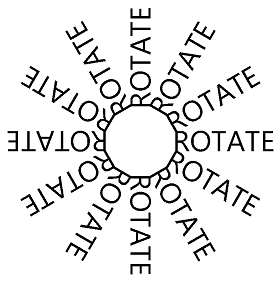

The Rotate Transform
Explore the effects and animations possible with the SkiaSharp rotate transform
With the rotate transform, SkiaSharp graphics objects break free of the constraint of alignment with the horizontal and vertical axes:

For rotating a graphical object around the point (0, 0), SkiaSharp supports both a RotateDegrees method and a RotateRadians method:
public void RotateDegrees (Single degrees)
public Void RotateRadians (Single radians)
A circle of 360 degrees is the same as 2π radians, so it's easy to convert between the two units. Use whichever is convenient. All the trigonometric functions in the .NET Math class use units of radians.
Rotation is clockwise for increasing angles. (Although rotation on the Cartesian coordinate system is counter-clockwise by convention, clockwise rotation is consistent with Y coordinates increasing going down as in SkiaSharp.) Negative angles and angles greater than 360 degrees are allowed.
The transform formulas for rotation are more complex than those for translate and scale. For an angle of α, the transform formulas are:
x' = x•cos(α) – y•sin(α)
y` = x•sin(α) + y•cos(α)
The Basic Rotate page demonstrates the RotateDegrees method. The BasicRotate.xaml.cs file displays some text with its baseline centered on the page and rotates it based on a Slider with a range of –360 to 360. Here's the relevant part of the PaintSurface handler:
using (SKPaint textPaint = new SKPaint
{
Style = SKPaintStyle.Fill,
Color = SKColors.Blue
})
using (SKFont font = new SKFont
{
Size = 100
})
{
canvas.RotateDegrees((float)rotateSlider.Value);
canvas.DrawText(Title, info.Width / 2, info.Height / 2, SKTextAlign.Center, font, textPaint);
}
Because rotation is centered around the upper-left corner of the canvas, for most angles set in this program, the text is rotated off the screen:
{kind=link}
Very often you'll want to rotate something centered around a specified pivot point using these versions of the RotateDegrees and RotateRadians methods:
public void RotateDegrees (Single degrees, Single px, Single py)
public void RotateRadians (Single radians, Single px, Single py)
The Centered Rotate page is just like the Basic Rotate except that the expanded version of the RotateDegrees is used to set the center of rotation to the same point used to position the text:
using (SKPaint textPaint = new SKPaint
{
Style = SKPaintStyle.Fill,
Color = SKColors.Blue
})
using (SKFont font = new SKFont
{
Size = 100
})
{
canvas.RotateDegrees((float)rotateSlider.Value, info.Width / 2, info.Height / 2);
canvas.DrawText(Title, info.Width / 2, info.Height / 2, SKTextAlign.Center, font, textPaint);
}
Now the text rotates around the point used to position the text, which is the horizontal center of the text's baseline:
{kind=link}
As with the centered version of the Scale method, the centered version of the RotateDegrees call is a shortcut. Here's the method:
RotateDegrees (degrees, px, py);
That call is equivalent to the following:
canvas.Translate(px, py);
canvas.RotateDegrees(degrees);
canvas.Translate(-px, -py);
You'll discover that you can sometimes combine Translate calls with Rotate calls. For example, here are the RotateDegrees and DrawText calls in the Centered Rotate page;
canvas.RotateDegrees((float)rotateSlider.Value, info.Width / 2, info.Height / 2);
canvas.DrawText(Title, info.Width / 2, info.Height / 2, SKTextAlign.Center, font, textPaint);
The RotateDegrees call is equivalent to two Translate calls and a non-centered RotateDegrees:
canvas.Translate(info.Width / 2, info.Height / 2);
canvas.RotateDegrees((float)rotateSlider.Value);
canvas.Translate(-info.Width / 2, -info.Height / 2);
canvas.DrawText(Title, info.Width / 2, info.Height / 2, SKTextAlign.Center, font, textPaint);
The DrawText call to display text at a particular location is equivalent to a Translate call for that location followed by DrawText at the point (0, 0):
canvas.Translate(info.Width / 2, info.Height / 2);
canvas.RotateDegrees((float)rotateSlider.Value);
canvas.Translate(-info.Width / 2, -info.Height / 2);
canvas.Translate(info.Width / 2, info.Height / 2);
canvas.DrawText(Title, 0, 0, SKTextAlign.Center, font, textPaint);
The two consecutive Translate calls cancel each other out:
canvas.Translate(info.Width / 2, info.Height / 2);
canvas.RotateDegrees((float)rotateSlider.Value);
canvas.DrawText(Title, 0, 0, SKTextAlign.Center, font, textPaint);
Conceptually, the two transforms are applied in the order opposite to how they appear in the code. The DrawText call displays the text in the upper-left corner of the canvas. The RotateDegrees call rotates that text relative to the upper-left corner. Then the Translate call moves the text to the center of the canvas.
There are usually several ways to combine rotation and translation. The Rotated Text page creates the following display:

Here's the PaintSurface handler of the RotatedTextPage class:
static readonly string text = " ROTATE";
...
void OnCanvasViewPaintSurface(object? sender, SKPaintSurfaceEventArgs args)
{
SKImageInfo info = args.Info;
SKSurface surface = args.Surface;
SKCanvas canvas = surface.Canvas;
canvas.Clear();
using (SKPaint textPaint = new SKPaint
{
Color = SKColors.Black
})
using (SKFont font = new SKFont
{
Size = 72
})
{
float xCenter = info.Width / 2;
float yCenter = info.Height / 2;
SKRect textBounds = new SKRect();
font.MeasureText(text, out textBounds);
float yText = yCenter - textBounds.Height / 2 - textBounds.Top;
for (int degrees = 0; degrees < 360; degrees += 30)
{
canvas.Save();
canvas.RotateDegrees(degrees, xCenter, yCenter);
canvas.DrawText(text, xCenter, yText, SKTextAlign.Center, font, textPaint);
canvas.Restore();
}
}
}
The xCenter and yCenter values indicate the center of the canvas. The yText value is a little offset from that. This value is the Y coordinate necessary to position the text so that it is truly vertically centered on the page. The for loop then sets a rotation based on the center of the canvas. The rotation is in increments of 30 degrees. The text is drawn using the yText value. The number of blanks before the word "ROTATE" in the text value was determined empirically to make the connection between these 12 text strings appear to be a dodecagon.
One way to simplify this code is to increment the rotation angle by 30 degrees each time through the loop after the DrawText call. This eliminates the need for calls to Save and Restore. Notice that the degrees variable is no longer used within the body of the for block:
for (int degrees = 0; degrees < 360; degrees += 30)
{
canvas.DrawText(text, xCenter, yText, SKTextAlign.Center, font, textPaint);
canvas.RotateDegrees(30, xCenter, yCenter);
}
It's also possible to use the simple form of RotateDegrees by prefacing the loop with a call to Translate to move everything to the center of the canvas:
float yText = -textBounds.Height / 2 - textBounds.Top;
canvas.Translate(xCenter, yCenter);
for (int degrees = 0; degrees < 360; degrees += 30)
{
canvas.DrawText(text, 0, yText, SKTextAlign.Center, font, textPaint);
canvas.RotateDegrees(30);
}
The modified yText calculation no longer incorporates yCenter. Now the DrawText call centers the text vertically at the top of the canvas.
Because the transforms are conceptually applied opposite to how they appear in code, it's often possible to begin with more global transforms, followed by more local transforms. This is often the easiest way to combine rotation and translation.
For example, suppose you want to draw a graphical object that rotates around its center much like a planet rotating on its axis. But you also want this object to revolve around the center of the screen much like a planet revolving around the sun.
You can do this by positioning the object in the upper-left corner of the canvas, and then using an animation to rotate it around that corner. Next, translate the object horizontally like an orbital radius. Now apply a second animated rotation, also around the origin. This makes the object revolve around the corner. Now translate to the center of the canvas.
Here's the PaintSurface handler that contains these transform calls in reverse order:
float revolveDegrees, rotateDegrees;
...
void OnCanvasViewPaintSurface(object? sender, SKPaintSurfaceEventArgs args)
{
SKImageInfo info = args.Info;
SKSurface surface = args.Surface;
SKCanvas canvas = surface.Canvas;
canvas.Clear();
using (SKPaint fillPaint = new SKPaint
{
Style = SKPaintStyle.Fill,
Color = SKColors.Red
})
{
// Translate to center of canvas
canvas.Translate(info.Width / 2, info.Height / 2);
// Rotate around center of canvas
canvas.RotateDegrees(revolveDegrees);
// Translate horizontally
float radius = Math.Min(info.Width, info.Height) / 3;
canvas.Translate(radius, 0);
// Rotate around center of object
canvas.RotateDegrees(rotateDegrees);
// Draw a square
canvas.DrawRect(new SKRect(-50, -50, 50, 50), fillPaint);
}
}
The revolveDegrees and rotateDegrees fields are animated. This program uses a different animation technique based on the .NET MAUI Animation class. The OnAppearing override creates two Animation objects with callback methods and then calls Commit on them for an animation duration:
protected override void OnAppearing()
{
base.OnAppearing();
new Animation((value) => revolveDegrees = 360 * (float)value).
Commit(this, "revolveAnimation", length: 10000, repeat: () => true);
new Animation((value) =>
{
rotateDegrees = 360 * (float)value;
canvasView.InvalidateSurface();
}).Commit(this, "rotateAnimation", length: 1000, repeat: () => true);
}
The first Animation object animates revolveDegrees from 0 degrees to 360 degrees over 10 seconds. The second one animates rotateDegrees from 0 degrees to 360 degrees every 1 second and also invalidates the surface to generate another call to the PaintSurface handler. The OnDisappearing override cancels these two animations:
protected override void OnDisappearing()
{
base.OnDisappearing();
this.AbortAnimation("revolveAnimation");
this.AbortAnimation("rotateAnimation");
}
The Ugly Analog Clock program (so called because a more attractive analog clock will be described in a later article) uses rotation to draw the minute and hour marks of the clock and to rotate the hands. The program draws the clock using an arbitrary coordinate system based on a circle that is centered at the point (0, 0) with a radius of 100. It uses translation and scaling to expand and center that circle on the page.
The Translate and Scale calls apply globally to the clock, so those are the first ones to be called following the initialization of the SKPaint objects:
void OnCanvasViewPaintSurface(object? sender, SKPaintSurfaceEventArgs args)
{
SKImageInfo info = args.Info;
SKSurface surface = args.Surface;
SKCanvas canvas = surface.Canvas;
canvas.Clear();
using (SKPaint strokePaint = new SKPaint())
using (SKPaint fillPaint = new SKPaint())
{
strokePaint.Style = SKPaintStyle.Stroke;
strokePaint.Color = SKColors.Black;
strokePaint.StrokeCap = SKStrokeCap.Round;
fillPaint.Style = SKPaintStyle.Fill;
fillPaint.Color = SKColors.Gray;
// Transform for 100-radius circle centered at origin
canvas.Translate(info.Width / 2f, info.Height / 2f);
canvas.Scale(Math.Min(info.Width / 200f, info.Height / 200f));
...
}
}
There are 60 marks of two different sizes that must be drawn in a circle around the clock. The DrawCircle call draws that circle at the point (0, –90), which relative to the center of the clock corresponds to 12:00. The RotateDegrees call increments the rotation angle by 6 degrees after every tick mark. The angle variable is used solely to determine if a large circle or a small circle is drawn:
void OnCanvasViewPaintSurface(object? sender, SKPaintSurfaceEventArgs args)
{
...
// Hour and minute marks
for (int angle = 0; angle < 360; angle += 6)
{
canvas.DrawCircle(0, -90, angle % 30 == 0 ? 4 : 2, fillPaint);
canvas.RotateDegrees(6);
}
...
}
}
Finally, the PaintSurface handler obtains the current time and calculates rotation degrees for the hour, minute, and second hands. Each hand is drawn in the 12:00 position so that the rotation angle is relative to that:
void OnCanvasViewPaintSurface(object? sender, SKPaintSurfaceEventArgs args)
{
...
DateTime dateTime = DateTime.Now;
// Hour hand
strokePaint.StrokeWidth = 20;
canvas.Save();
canvas.RotateDegrees(30 * dateTime.Hour + dateTime.Minute / 2f);
canvas.DrawLine(0, 0, 0, -50, strokePaint);
canvas.Restore();
// Minute hand
strokePaint.StrokeWidth = 10;
canvas.Save();
canvas.RotateDegrees(6 * dateTime.Minute + dateTime.Second / 10f);
canvas.DrawLine(0, 0, 0, -70, strokePaint);
canvas.Restore();
// Second hand
strokePaint.StrokeWidth = 2;
canvas.Save();
canvas.RotateDegrees(6 * dateTime.Second);
canvas.DrawLine(0, 10, 0, -80, strokePaint);
canvas.Restore();
}
}
The clock is certainly functional although the hands are rather crude:
{kind=link}
For a more attractive clock, see the article SVG Path Data in SkiaSharp.